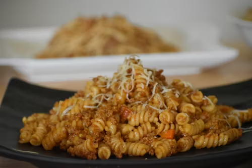

Massa com Guisado
Uma deliciosa massa com guisado saborosa e super fácil de fazer, perfeito para qualquer ocasião.
- Tempo de preparo:
- 35 minutos
- Rendimento:
- Serve até 3 pessoas
- Dificuldade:
- Fácil de fazer
- Categoria:
- Almoço ou Janta
Ingredientes:
- 300g de macarrão parafuso
- 400g de carne bovina (patinho ou acém)
- 1 lata de tomate pelado
- 1 cebola média picada
- Sal, alho e azeite a gosto
Modo de preparo:
- Tempere a carne com sal e alho e refogue no azeite com a cebola até dourar.
- Adicione o tomate pelado, misture bem e deixe cozinhar em fogo baixo por 20 minutos até a carne ficar macia.
- Desfie a carne dentro do próprio molho e misture.
- Cozinhe o macarrão em água com sal conforme a embalagem e escorra.
- Misture o macarrão ao molho e sirva quente.
| TABELA NUTRICIONAL |
| Nutrientes |
Qtde |
%VD* |
| Calorias |
480kcal |
24% |
| Proteínas |
28g |
37% |
| Carboidratos |
52g |
17% |
| *Baseado em dieta diária de 2000 kcal |
Link para video da receita: Assista
aqui